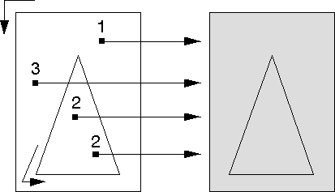
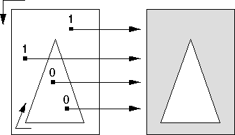

For paths drawn in winding mode (also like area primitives), the direction the boundaries in the path are drawn in determines whether a given point is included in the filled path. The drawn direction of a boundary line depends on both the graphics functions used to draw it and the world coordinates that define it.
For box primitives, for example, if the specified diagonal corner is to the right, to the top, or both, of the current position, the box is drawn counterclockwise. If the specified diagonal corner is to the left, to the bottom, but not both, the box is drawn clockwise.
For a polyline primitive, the direction of the boundary depends on the relative values of the start and end points of each line. For a polygon primitive, the direction of the boundary depends on the relative values of the specified vertices.
To determine whether a given point is included in the filled path, count the number of boundary lines to be crossed to move from that point to infinity. For each boundary line drawn in one direction add one to the tally. For each boundary line drawn in the opposite direction, subtract one from the tally. A point is within the area if the result is nonzero. As with the alternate mode, the imaginary determining line is drawn in the positive x-direction from the point in question toward infinity.
The following figure shows how the operating system determines the filled portion for the path shown in the figure before the previous one. Assume that both the rectangle and triangle were drawn in the same direction, whether clockwise or counterclockwise is immaterial. Both figures are filled, because the number of times the imaginary lines drawn from those points in the positive x-direction intersect the path boundaries is continuously summed. There is never a subtraction of a boundary tally to reduce the total to 0.
Paths Constructed in the Same Direction in Winding Mode
Parts of the path with nonzero tallys are filled; parts with zero tallys are not filled.
If two figures, for example in the following figure, are drawn in different directions, the tally for the inner triangle is 0 and the area looks exactly as it does in alternate mode.
Paths Constructed in Different Directions in Winding Mode
Parts of the path with nonzero tallys are filled; parts with zero tallys are not filled.